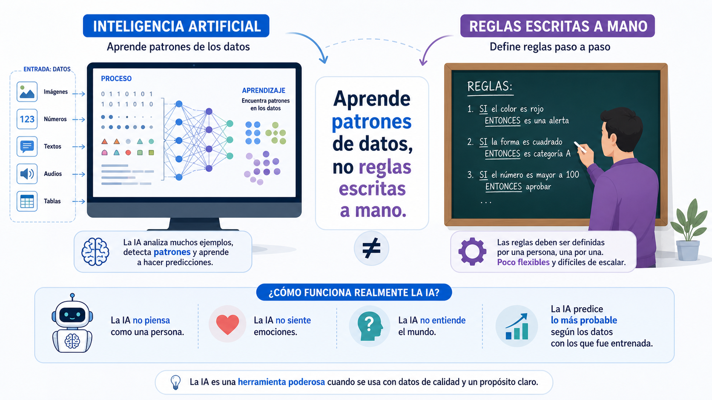
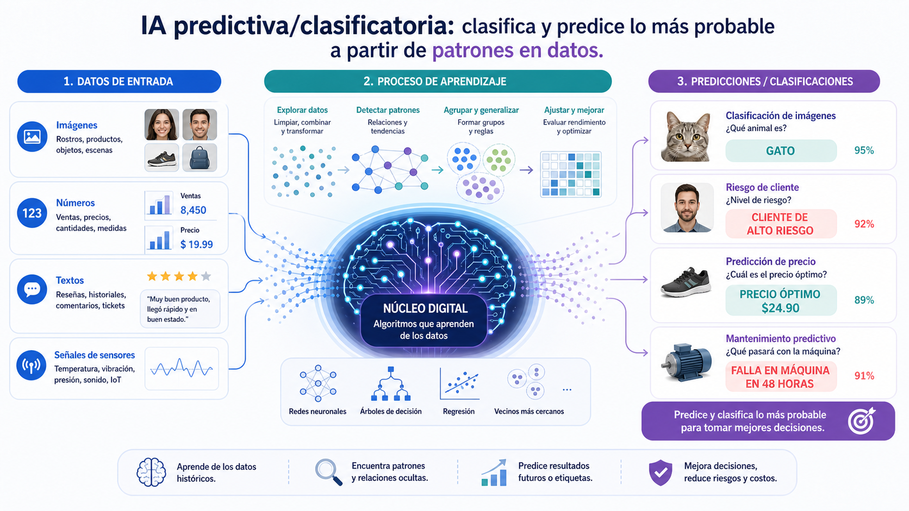
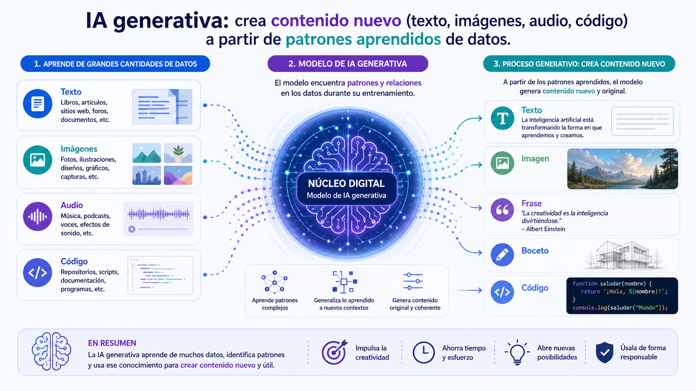

Descubrir
y probar
Antes de explicar nada, vamos a hablar con una IA. Hoy montamos las bases: qué es, qué tipos hay, dónde vive y qué no debe saber de ti.
Abre un chat con una IA
Cada uno abre Gemini (con su cuenta de Google) y le escribe. Nada de teoría todavía: primero se toca, luego se entiende.
- Pídele que te explique algo que ya sabes, como si tuvieras 5 años.
- Pídele lo mismo, pero como si fuera una estrella del pop.
- Pregúntale algo que sepas que no puede saber (algo de hoy mismo, o de tu vida).
- Anota una respuesta que te haya sorprendido para compartirla.
¿Imágenes generadas por IA o reales?
Imagen real o no: link
- Gana quien más aciertos tenga.
- Al final: ¿qué pistas usabais para adivinar? ¿Funcionan siempre?
Pistas:
- Detalles raros: manos, dedos, orejas, ojos, reflejos.
- Texturas y fondos: a veces son demasiado perfectos o demasiado caóticos.
Detector imágenes IA: link
¿Quién está creando?
- El 77% de los libros de autoayuda son generados por IA: link
- La industria literaria está dando premios a libros generados por IA: link
Cómo detectarlo?
- Abuso del gerundio, adjetivos redundantes, muchos guiones y punto y coma
- Sintaxis predecible, uso excesivo de listas, frases hechas, palabras "tipo" IA (profundizar, revelar, garantizar, ...)
- Frases de tamaño parecido, texto demasiado ordenado, ...
Detectores de texto hecho con IA: link 1, link 2, link 3
Quién es Paco del Campo? link
¿Qué es realmente "la IA"?

Predictiva vs. generativa
Mira algo y decide qué es o qué va a pasar: ¿es spam este correo? ¿qué serie te va a gustar? ¿hay un peatón cruzando?

Crea algo nuevo que antes no existía: un texto, una imagen, una canción, un vídeo. Es la que vais a usar todo el taller.

¿Dónde se usa la IA hoy?
Medicina
Detecta tumores en radiografías antes que el ojo humano, y acelera el diagnóstico.
Coches autónomos
Combinan cámaras y sensores para decidir en milisegundos qué hacer en la carretera.
Videojuegos
Genera niveles, controla NPCs y adapta la dificultad a cómo juegas.
Arte y música
Genera imágenes desde una descripción de texto, o compone piezas musicales originales.
Atención al cliente
Chatbots que resuelven dudas y devoluciones sin esperar a que un humano conteste.
Traducción
Traduce cualquier idioma casi al instante, entendiendo contexto y no solo palabras sueltas.
Ciencia
AlphaFold predijo la forma de casi todas las proteínas conocidas, algo que llevaba décadas.
Programación
El 40% del código que se programa hoy día lo hace IA. Más del 85% de los programadores la utiliza. Mejora entre un 50% y un 45% en velociad y productividad.
¿Qué es un "modelo"?
Un modelo generativo es el programa entrenado que, dado algo de entrada, genera algo de salida. Se entrena una vez con muchísimos ejemplos, y luego se usa millones de veces.
Modelos comerciales
Hay muchos modelos comerciales, y cada uno tiene sus ventajas y desventajas. Algunos son gratuitos mientras que otros requieren suscripción.
Estadísticas de modelos: Link
El contexto
El modelo no tiene memoria real: en cada respuesta, vuelve a leer toda la conversación desde el principio para saber de qué habláis. Eso es el "contexto".
- Cuanto más larga la conversación, más tiene que releer — y más puede "perder el hilo" de algo dicho al principio.
- Cuanto más contexto y más larga es la conversación más se consume y antes se gasta lo que tenemos disponible del modelo.
- Por eso a veces conviene empezar un chat nuevo en vez de seguir uno kilométrico.
- Si le das más contexto (ejemplos, detalles), suele responder mejor. Esto lo trabajaremos a fondo en la Sesión 2.
- Cuando tiene mucho pero mucho contexto, comprime la información, y los resultados son peores.
Cómo se paga la IA: los tokens
Un token es un trocito de palabra (una palabra corta, o un pedazo de una larga). Las empresas cobran por tokens de entrada (lo que tú escribes) y de salida (lo que la IA responde).
Modo razonamiento (thinking)
El modo razonamiento no “sabe más”: piensa mejor antes de responder.
El modelo intenta contestar rápido con lo primero que considera más probable o más útil.
- Va más directo.
- Suele tardar menos.
- Sirve bien para dudas simples o tareas rápidas.
- Puede quedarse corta si el problema tiene varios pasos.
El modelo dedica más tiempo a ordenar el problema, separar pasos y comprobar mejor lo que va a decir.
- Analiza antes de responder.
- Divide la tarea en partes.
- Comete menos fallos en problemas complejos.
- Suele tardar más dependiendo de la complejidad.
- Puede generar varias respuestas, analizarlas y quedarse con la mejor (Aprendizaje por refuerzo).
- Mayor consumo de tokens
En el gratis, tú eres el producto
Cuando escribes en un chat de IA gratuito, esa conversación no desaparece. Normalmente se guarda y puede usarse para seguir entrenando el modelo.
Casi todas las herramientas de IA son de pago o tienen una parte gratis limitada (freemium). Si no pagas con dinero, sueles "pagar" con algo (publicidad, más lento, ...)
- No es una charla privada como con un amigo: puede quedar almacenada en un servidor.
- Cuanta más gente escribe, mejor aprende el modelo — y esa mejora vale dinero para la empresa.
- Regla simple: si no lo dirías en voz alta en clase, no se lo escribas a una IA gratis.
- Usa bien la capa gratuita antes de pensar en pagar, y no registrarse con tu email real en mil páginas distintas "por probar", no recordarás quién tiene acceso a tu cuenta.
- Consejo: usa modelos más baratos para lo básico y reserva los mejores para lo que merezca la pena.
Esto no se lo cuentas nunca a un chat
Vuestro primer "prompt consciente"
Vuelve al chat con el que empezaste hoy. Ahora que sabes más, escribe un prompt sin dar ningún dato personal, y pídele algo que combine dos de los campos que hemos visto (por ejemplo: "una historia corta sobre un médico que usa IA para diagnosticar").
- Comparte con la clase qué te ha respondido.
- Nos quedamos con la idea clave: la IA genera lo más probable, no lo que "sabe" de verdad.
- Próxima sesión: cómo escribir prompts que consigan justo lo que quieres.